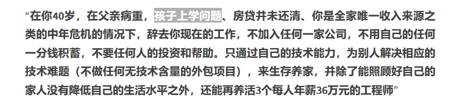
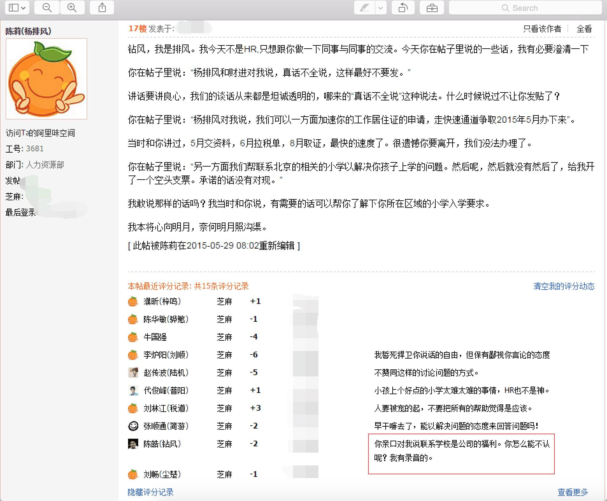
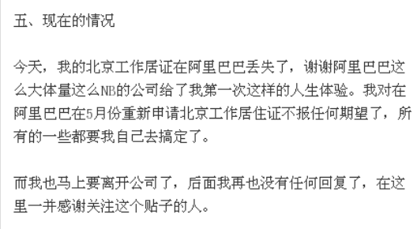

北漂，北漂
上一篇：论我国的35岁中年危机（二）
今年有好多名人都去世了。
凯文米特尼克、李克强、陈皓……
陈皓于2023年5月15日去世。他的博客是coolshell
他的个人简介是：
20年软件开发相关工作经验，10年以上项目和团队管理经验。擅长底层技术架构，团队建设，软件工程，软件研发咨询，以及全球软件团队协作管理。对高性能，高可用性，分布式，高并发，以及大规模数据处理系统有一些经验和心得。喜欢关注底层技术平台和互联网行业应用。技术擅长C/C++/Java和Unix/Linux/Windows。曾于Amazon中国任研发经理，负责电子商务全球化业务（全球开店）和全球库存预测系统的研发。曾在阿里巴巴北京研发中心、商家业务部曾任资深专家一职，负责电商云平台、开放平台，云监控和电商多媒体平台。曾在阿里巴巴核心系统专家组从事阿里核心系统和阿里云ECS相关的虚拟化平台的开发工作。现在创业中，MegaEase创始人，致力于为企业的高并发高可用架构提供一整套的技术解决方案和产品
做一个技术大佬
做一个技术大佬，做到头，你会得到什么呢？
死亡前六年
我看绩效考核
陈皓在本人博客中说的孩子上学问题，指的是没有北京工作居住证，因此孩子不能在北京上学。

如何评价左耳朵耗子陈皓因为工作居住证离开阿里巴巴？

阿里巴巴HR出尔反尔，言而无信，导致陈皓的孩子无法在北京上小学，从而不得不离职，去孩子能上学的地方。

原来北京工作要“绿卡”。
众所周知，没有绿卡，是无法享受发达国家的社会福利的。
香港的菲佣，雇佣到期后只能走人，是不能在香港养老的。
北京没有户口的程序员 = 香港菲佣
死亡前六个月

黑色幽默：他曾说，45岁之前不考虑出书，因为觉得自己没有资格出书。而他去世于47岁。
总结
日本100岁，德国80岁，香港67岁，新加坡67.5岁，美国65岁，各国正在从全球抢人。
大家都知道，人才在哪里，未来就在哪里。
而我们国家认为，人才是负担。
贡献了20年是理所应当的，超过40岁，就应该哪里来的回哪里去。
哪怕是最难移民的发达国家，永居也不超过8-10年。技术人才真没必要留在这里了。
中国十年之内是不缺人的，但是十年之后呢？